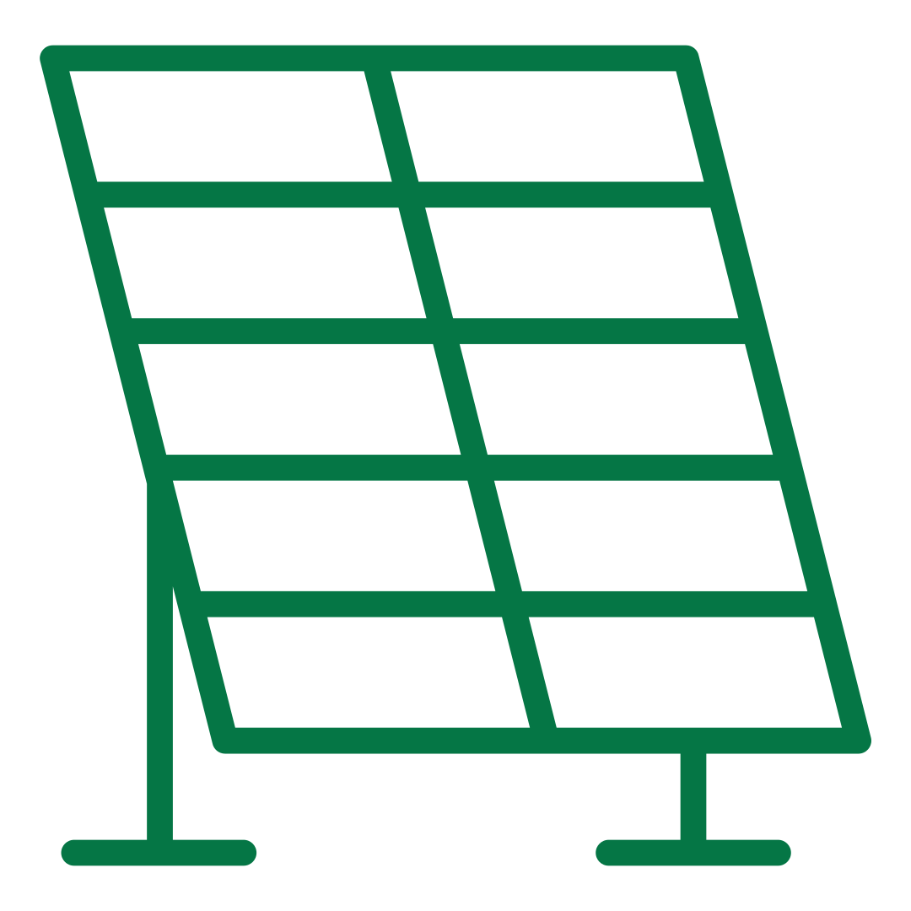

Een duurzame oplossing

516
Zonnepanelen

30
Warmtepompen
duurzame oplossingen van Schoonschip
Schoonschip gebruikt verschillende Oplossingen als zonnepanelen, thermische panelen en warmtepompen voor energiebesparing. Ook houden de bewoners van schoonschip zich bezig met het reduceren van afval door verpakkingen te recyclen en Gezamenlijk eten te delen. Schoonschip beschikt ook over een door hun genoemde smartgrid die ervoor zorgt dat alle elektriciteit zo efficiënt mogelijk gebruikt wordt.
Excursies
Schoonschip doet ook aan het informeren van de bevolking doormiddel van excursies. Je kan Contact opnemen met de bewoners van Schoonschip voor een rondleiding waarbij je bewust wordt van alle duurzame oplossingen die iedereen zou kunnen toepassen in hun eigen huishouden.